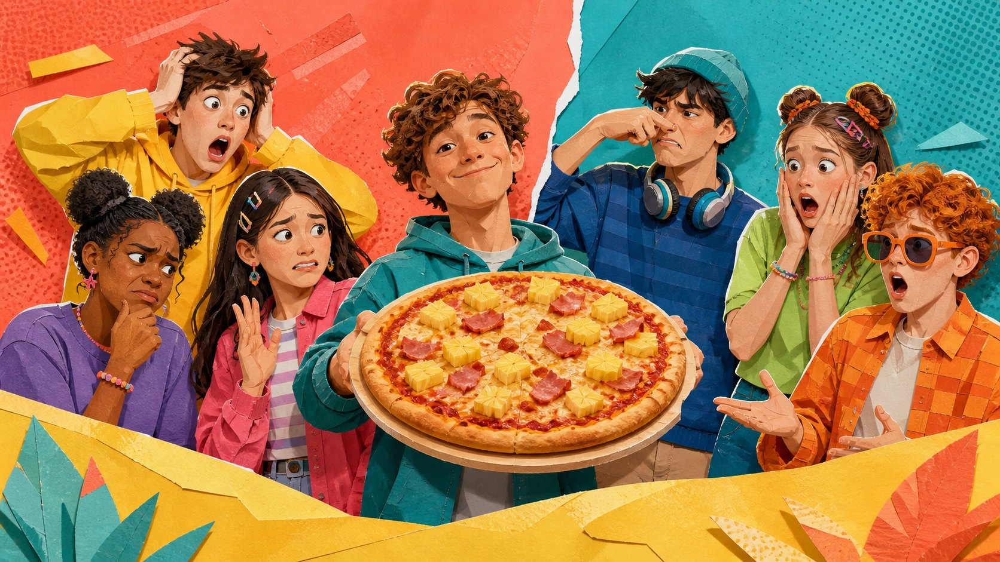
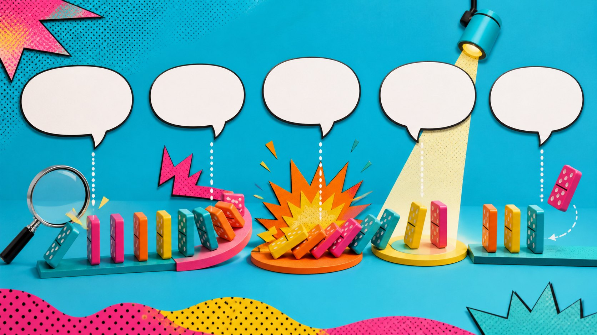
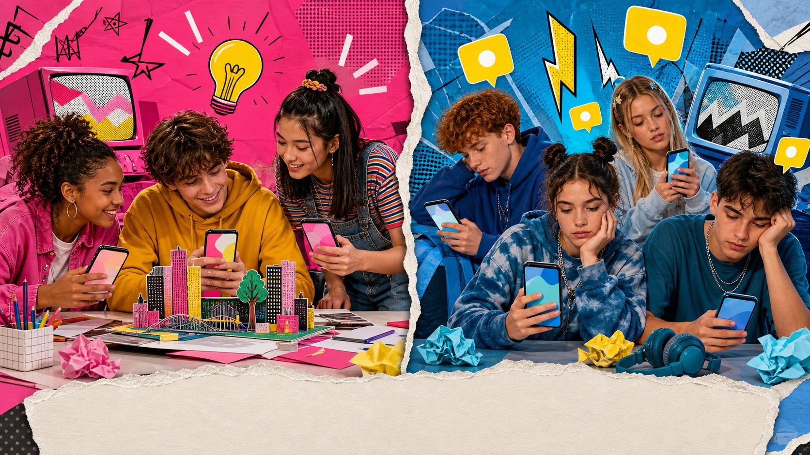
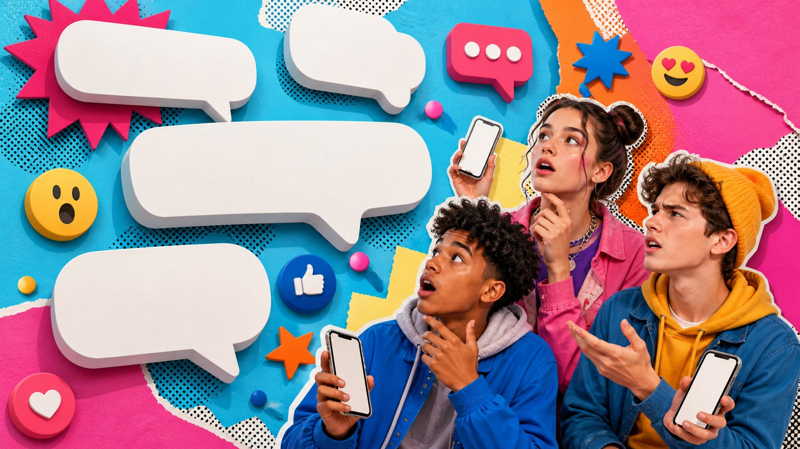
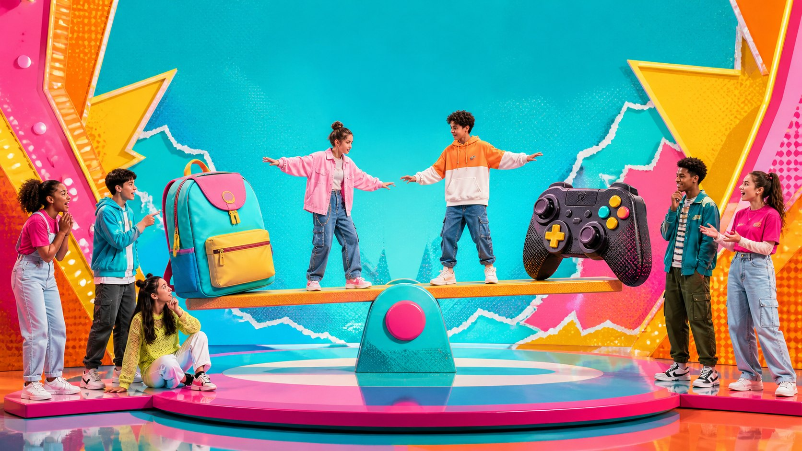
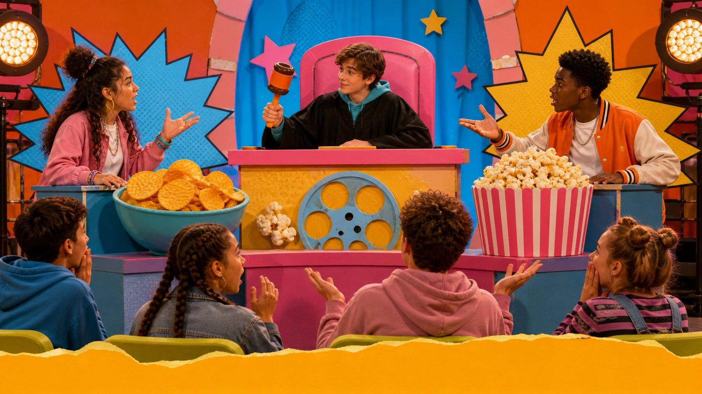
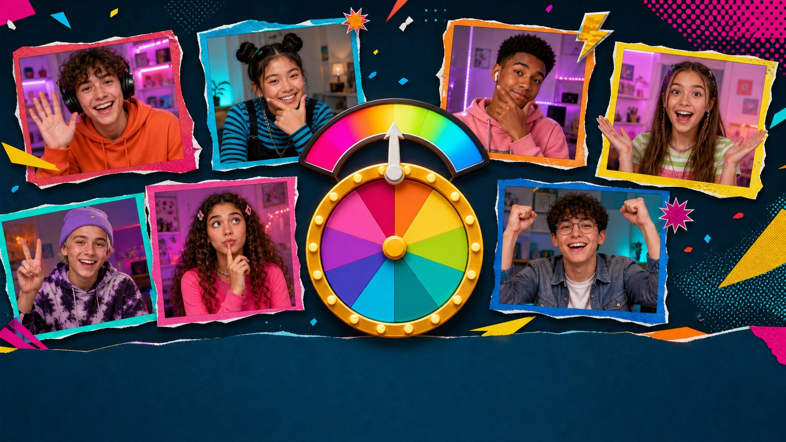

The opinion show where every idea needs a connection.
BECAUSEHOWEVERSO
01 / Seven quick opinions
Choose a harmless hot take.
iChoose one. Say only: "I think..." Your reason comes later.
Seven students can choose seven different opinions.

02 / Picture reaction
Should pineapple stay on the pizza?
Vote first. Then add one reason.
03 / Tonight's challenges
Make your opinion easy to follow.
1 State a view naturally2 Add a reason3 Show contrast4 Explain a result5 Give an example6 Add another point7 Disagree politely
iChoose one challenge you want to improve today.

REASON becauseCONTRAST butRESULT soEXAMPLE for exampleADDITION in addition
iA linking word tells the audience what the second idea is doing.
04 / Opinion starters
Say what you think.
iChoose one starter. Add a complete opinion, not only a topic.
Example: "I think school should start later."
05 / Reason
Give the audience a reason.
I prefer online notesBECAUSE...
because / since + subject + verb
Choose the idea that really answers "Why?"
06 / Contrast
Turn the idea in a new direction.
Choose a connector to reveal its pattern.
iAll three show contrast, but their punctuation is different.
07 / Result
What happened because of it?
+=
so joins clauses. Therefore / As a result can begin a new sentence.
Open the chain from left to right.
08 / Example
Show one real detail.
Games can teach useful skills.
for example + a complete example / such as + examples in a list
Choose the detail that supports the opinion.
09 / Addition
Add one more useful point.
School clubs build confidence.
In addition, they help students make friends.
Theyalsohelp students make friends.
iUse addition only when the new idea supports the same main point.
10 / Punctuation challenge
Choose the correct pattern.
I like the idea ___ but it is expensive.
I like the idea ___ However, it is expensive.
Although it is expensive ___ I like the idea.
The road was closed ___ so we turned back.
0 / 4 patterns correct.
11 / Error repair
Remove the extra connector.
iClick your line only after you can explain what must change.
12 / Seven-question speed round
Which link fits the meaning?
We stayed inside ___ it was raining.
I like the design, ___ it is too expensive.
The train stopped, ___ we called a taxi.
Some hobbies are creative. ___, photography teaches composition.
The app is easy to use. ___, it is free.
___ the task was difficult, we finished it.
The room was full. ___, we moved online.
Score: 0 / 7

Choose your connector. Say an opinion from the picture, then reveal the model.
14 / Listening mix
Catch your connector.
Each student listens for one numbered line.
iSay the connector and its job before you reveal.
No answers revealed yet.
15 / Two-speaker dialogue
Do they agree or disagree?
Topic: the amount of homework
Choose, then support your answer with one phrase you heard.
16 / Useful responses
Keep the conversation open.
iReply to this opinion: "Homework should disappear completely."
Choose a response type and complete it naturally.

iImprove your comment aloud. Then reveal one possible answer.
18 / Short opinion post
Should phones be used in class?
In my opinion, phones can support some classroom tasks because they give students quick access to useful tools.
For example, students can record pronunciation or photograph homework instructions. In addition, a phone can help an absent student join online.
However, notifications can distract people, and not every student has the same device. Therefore, teachers need clear rules. Phones should stay away during explanations, but students can use them when a task requires them.
iAnswer in a full sentence. Reveal only after everyone has spoken.

20 / Balanced opinion
Show both sides. Then choose.
Open the three parts in order.

21 / Snack court
Which movie snack should win?
1 JUDGE ask for reasons and decide2 CRISPS give a claim + reason3 POPCORN give a claim + reason4 EXAMPLE demand one specific example5 CONTRAST listen for but / however6 RESULT listen for so / therefore7 REPORTER summarize the final decision
iEach speaker gets 30 seconds. The judge may ask one follow-up question.
22 / Seven-person relay
Keep the opinion moving.
School should start later.
1 I think...2 because...3 for example...4 in addition...5 however...6 so...7 to sum up...
iListen to the previous speaker. Your sentence must connect to their idea.
23 / Model opinion
Can you hear the structure?
Topic: controlled phone use in class
1 position2 reason3 example4 addition5 contrast6 result7 final view
In my opinion, students should be allowed to use phones for some classroom tasks because phones can be useful learning tools. For example, students can record pronunciation, check a word, or photograph homework instructions. In addition, a phone can help a student join an online lesson when they are absent. However, notifications can easily distract people, and not every student has the same device. Therefore, teachers need clear rules. Phones should stay away during explanations, but students can use them when a task requires them. To sum up, I support controlled phone use because it gives us the benefits without allowing the phone to control the lesson.

24 / Seven-person final show
Spin a topic. Take a role.
1 HOST introduce the topic2 SPEAKER give a 75-second opinion3 REASON listen for because4 CONTRAST listen for but / however5 EXAMPLE listen for a specific detail6 RESULT listen for so / therefore7 REPLY ask one polite follow-up
The wheel is ready.
25 / Live round
75
Give one connected opinion.
Include a clear position, both sides, one example, and a final view.
0 / 7 language lights switched on.
26 / Final score
What can you connect now?
Choose one and give a complete example.
Homework / Final-project preparation
Choose one safe topic you genuinely care about.
Write a clear opinion in one sentence.
Add one reason and one specific example.
Add one contrasting point with but, however, or although.
Add one result with so or therefore.
Record a 60-90 second practice answer.
Listen again and mark every linking word you used.
NEXT: FINAL SPEAKING PROJECT / PRESENTATION OR DEBATE

iImprove your comment aloud. Then reveal one possible answer.